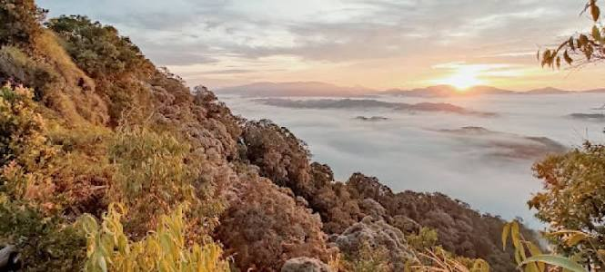
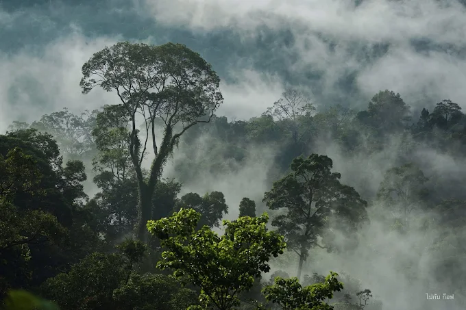

Pha Asok

Hala-bala Wildlife Sanctuary

| สถานที่ | จุดชมวิวทะเลหมอกและจุดเดินป่าธรรมชาติ | |
| ที่ตั้ง | ม.10 มาโมง ตำบล สุคิริน อำเภอ สุคิริน นราธิวาส 96190 | |
| โทรศัพท์ | 0927548012 | |
| ผาอโศก | ||
| ระยะทาง | ประมาณ 3 กิโลเมตร ใช้เวลาราว 2 ชั่วโมง | |
| ค่าบริการ | 170 บาท | |
| สวัสดิการ | ติดต่อไกด์ | |
| ข้อควรรู้ | ต้องจองทริปกับไกด์ในพื้นที่ ไม่อนุญาติให้เดินขึ้นเอง |
| สถานที่ | เดินป่าลึกและดูนก/สัตว์ป่า เส้นทางเดินป่าศึกษาธรรมชาติ | |
| ที่ตั้ง | บ้านบาลา ม.5 ต.โละจูด อ.แว้ง จ.นราธิวาส 96160 | |
| โทรศัพท์ | 073-611-131 | |
| เขตรักษาพันธุ์สัตว์ป่าฮาลา-บาล | ||
| ระยะทาง | ประมาณ 3 กิโลเมตร ใช้เวลาราว 2 ชั่วโมง | |
| ข้อควรรู้ | เข้าออกต้องได้รับอนุญาต เข้าพักต้องติดต่อสำนักบริหารพื้นที่อนุรักษ์ที่ 6 สาขาปัตตานีก่อนเข้า 15 วัน ถ่ายทำภาพยนต์ สารคดี ต้องได้รับอนุญาต |